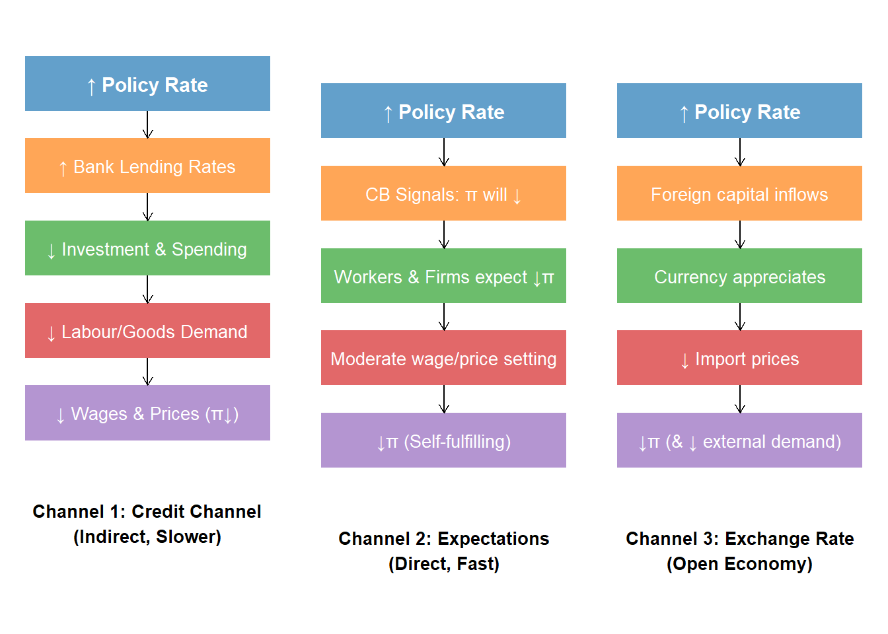

library(ggplot2)Warning: package 'ggplot2' was built under R version 4.4.3library(gridExtra)Warning: package 'gridExtra' was built under R version 4.4.3library(grid)
# Create three diagrams side by side showing the channels
# Channel 1: Credit Channel
channel1 <- ggplot() +
annotate("rect", xmin = 0, xmax = 10, ymin = 9, ymax = 10, fill = "#1f77b4", alpha = 0.7) +
annotate("text", x = 5, y = 9.5, label = "↑ Policy Rate", fontface = "bold", color = "white", size = 4) +
annotate("rect", xmin = 0, xmax = 10, ymin = 7.5, ymax = 8.5, fill = "#ff7f0e", alpha = 0.7) +
annotate("text", x = 5, y = 8, label = "↑ Bank Lending Rates", color = "white", size = 3.5) +
annotate("segment", x = 5, xend = 5, y = 9, yend = 8.5, arrow = arrow(length = unit(0.2, "cm"))) +
annotate("rect", xmin = 0, xmax = 10, ymin = 6, ymax = 7, fill = "#2ca02c", alpha = 0.7) +
annotate("text", x = 5, y = 6.5, label = "↓ Investment & Spending", color = "white", size = 3.5) +
annotate("segment", x = 5, xend = 5, y = 7.5, yend = 7, arrow = arrow(length = unit(0.2, "cm"))) +
annotate("rect", xmin = 0, xmax = 10, ymin = 4.5, ymax = 5.5, fill = "#d62728", alpha = 0.7) +
annotate("text", x = 5, y = 5, label = "↓ Labour/Goods Demand", color = "white", size = 3.5) +
annotate("segment", x = 5, xend = 5, y = 6, yend = 5.5, arrow = arrow(length = unit(0.2, "cm"))) +
annotate("rect", xmin = 0, xmax = 10, ymin = 3, ymax = 4, fill = "#9467bd", alpha = 0.7) +
annotate("text", x = 5, y = 3.5, label = "↓ Wages & Prices (π↓)", color = "white", size = 3.5) +
annotate("segment", x = 5, xend = 5, y = 4.5, yend = 4, arrow = arrow(length = unit(0.2, "cm"))) +
annotate("text", x = 5, y = 1.5, label = "Channel 1: Credit Channel\n(Indirect, Slower)",
fontface = "bold", size = 3.5) +
xlim(-0.5, 10.5) + ylim(0, 10.5) +
theme_void() +
theme(plot.title = element_text(hjust = 0.5, face = "bold", size = 10))
# Channel 2: Expectations Channel
channel2 <- ggplot() +
annotate("rect", xmin = 0, xmax = 10, ymin = 8.5, ymax = 9.5, fill = "#1f77b4", alpha = 0.7) +
annotate("text", x = 5, y = 9, label = "↑ Policy Rate", fontface = "bold", color = "white", size = 4) +
annotate("rect", xmin = 0, xmax = 10, ymin = 7, ymax = 8, fill = "#ff7f0e", alpha = 0.7) +
annotate("text", x = 5, y = 7.5, label = "CB Signals: π will ↓", color = "white", size = 3.5) +
annotate("segment", x = 5, xend = 5, y = 8.5, yend = 8, arrow = arrow(length = unit(0.2, "cm"))) +
annotate("rect", xmin = 0, xmax = 10, ymin = 5.5, ymax = 6.5, fill = "#2ca02c", alpha = 0.7) +
annotate("text", x = 5, y = 6, label = "Workers & Firms expect ↓π", color = "white", size = 3.5) +
annotate("segment", x = 5, xend = 5, y = 7, yend = 6.5, arrow = arrow(length = unit(0.2, "cm"))) +
annotate("rect", xmin = 0, xmax = 10, ymin = 4, ymax = 5, fill = "#d62728", alpha = 0.7) +
annotate("text", x = 5, y = 4.5, label = "Moderate wage/price setting", color = "white", size = 3.5) +
annotate("segment", x = 5, xend = 5, y = 5.5, yend = 5, arrow = arrow(length = unit(0.2, "cm"))) +
annotate("rect", xmin = 0, xmax = 10, ymin = 2.5, ymax = 3.5, fill = "#9467bd", alpha = 0.7) +
annotate("text", x = 5, y = 3, label = "↓π (Self-fulfilling)", color = "white", size = 3.5) +
annotate("segment", x = 5, xend = 5, y = 4, yend = 3.5, arrow = arrow(length = unit(0.2, "cm"))) +
annotate("text", x = 5, y = 1, label = "Channel 2: Expectations\n(Direct, Fast)",
fontface = "bold", size = 3.5) +
xlim(-0.5, 10.5) + ylim(0, 10.5) +
theme_void() +
theme(plot.title = element_text(hjust = 0.5, face = "bold", size = 10))
# Channel 3: Exchange Rate Channel
channel3 <- ggplot() +
annotate("rect", xmin = 0, xmax = 10, ymin = 8.5, ymax = 9.5, fill = "#1f77b4", alpha = 0.7) +
annotate("text", x = 5, y = 9, label = "↑ Policy Rate", fontface = "bold", color = "white", size = 4) +
annotate("rect", xmin = 0, xmax = 10, ymin = 7, ymax = 8, fill = "#ff7f0e", alpha = 0.7) +
annotate("text", x = 5, y = 7.5, label = "Foreign capital inflows", color = "white", size = 3.5) +
annotate("segment", x = 5, xend = 5, y = 8.5, yend = 8, arrow = arrow(length = unit(0.2, "cm"))) +
annotate("rect", xmin = 0, xmax = 10, ymin = 5.5, ymax = 6.5, fill = "#2ca02c", alpha = 0.7) +
annotate("text", x = 5, y = 6, label = "Currency appreciates", color = "white", size = 3.5) +
annotate("segment", x = 5, xend = 5, y = 7, yend = 6.5, arrow = arrow(length = unit(0.2, "cm"))) +
annotate("rect", xmin = 0, xmax = 10, ymin = 4, ymax = 5, fill = "#d62728", alpha = 0.7) +
annotate("text", x = 5, y = 4.5, label = "↓ Import prices", color = "white", size = 3.5) +
annotate("segment", x = 5, xend = 5, y = 5.5, yend = 5, arrow = arrow(length = unit(0.2, "cm"))) +
annotate("rect", xmin = 0, xmax = 10, ymin = 2.5, ymax = 3.5, fill = "#9467bd", alpha = 0.7) +
annotate("text", x = 5, y = 3, label = "↓π (& ↓ external demand)", color = "white", size = 3.5) +
annotate("segment", x = 5, xend = 5, y = 4, yend = 3.5, arrow = arrow(length = unit(0.2, "cm"))) +
annotate("text", x = 5, y = 1, label = "Channel 3: Exchange Rate\n(Open Economy)",
fontface = "bold", size = 3.5) +
xlim(-0.5, 10.5) + ylim(0, 10.5) +
theme_void() +
theme(plot.title = element_text(hjust = 0.5, face = "bold", size = 10))
# Combine all three plots
gridExtra::grid.arrange(channel1, channel2, channel3, nrow = 1)
